MISC-image-1
image[1]
启示：切忌形成惯性思路
尽管总结有益，亦是为了形成常见的解题思路。尽管浅薄的笔者通过上述几种方法，的确能独立解出一定比例的图像MISC题，但出题者永远比你懂得多、想得多。要学会跳出固定范式，灵活运用！
1
winhex改变图片规格
大白
看不到图？ 是不是屏幕太小了 注意：得到的 flag 请包上 flag{} 提交
此为原始图像👇
观察到大白为半身图，丢进winhex查看，实为png图像没错；结合提示（如果在kali中无法正常浏览图片也可以做接下来的操作），更改图片高度
#方法如下winhex参数
更改后保存得👇
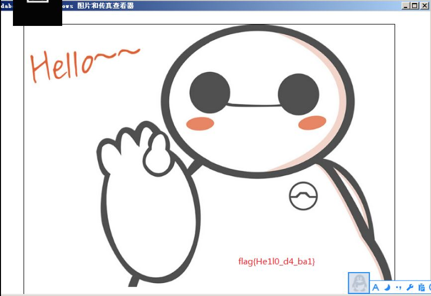
出现的问题
途中遇到提示“winhex无法创建，请确定文件夹存在，文件没有收到保护”。查询得->修改winhex菜单：选项–常规，临时文件目录为XXX，关闭winhex重新打开文件操作即可。
在上传的过程中笔者出现图片始终显示不了的问题，在本地也是。调试了多遍发现上传图片的方式大致有
转base64和本地使用绝对路径等。
其中转base不提倡是因为转换之后篇幅太大，即使利用了标签等方式，复制这一项笔者也吃不消。
本地需要注意几个点：1.图片调用路径不对；2.图片名称不对；3.图片本身的问题；4.图片调用代码问题。（说明：图片调用代码为 img src=”图片地址” alt=”图片说明” ）
2
Stegsolve
LSB
注意：得到的 flag 请包上 flag{} 提交
此为原始图像👇

观察到此为一普通图像，根据题目提示，执行cmd代码调用Stegsolve->
java -jar C:\Users\16231\Desktop\Stegsolve.jar |
打开需处理的图片后，通过<>调整可观察到👇
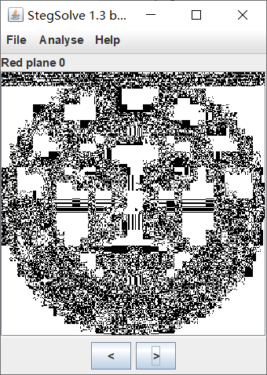
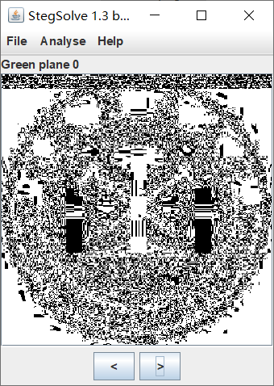
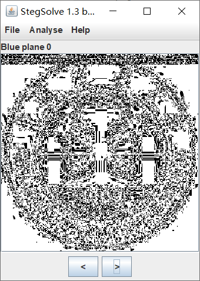
即，在该图像的RED,GREEN,BLUE通道上方出现了与其他图像不同的内容。于是选择操作Analyse-DataExtract👇
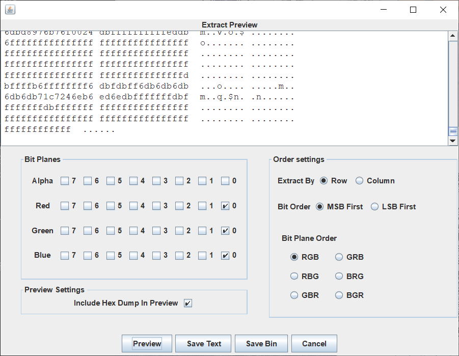
通过SaveBin导出flag.png可得👇
通过软件扫描二维码可得cumtctf{1sb_i4_s0_Ea4y}，更改头部得到flag。
3
binwalk查看隐藏文件+压缩包暴力破解
ningen
人类的科学日益发展，对自然的研究依然无法满足，传闻日本科学家秋明重组了基因序列，造出了名为ningen的超自然生物。某天特工小明偶然截获了日本与俄罗斯的秘密通信，文件就是一张ningen的特写，小明通过社工，知道了秋明特别讨厌中国的六位银行密码，喜欢四位数。你能找出黑暗科学家秋明的秘密么？ 注意：得到的 flag 请包上 flag{} 提交
此为原始图像👇
日常操作，打开winhex里，观察到其中存在一个ningen.txt👇
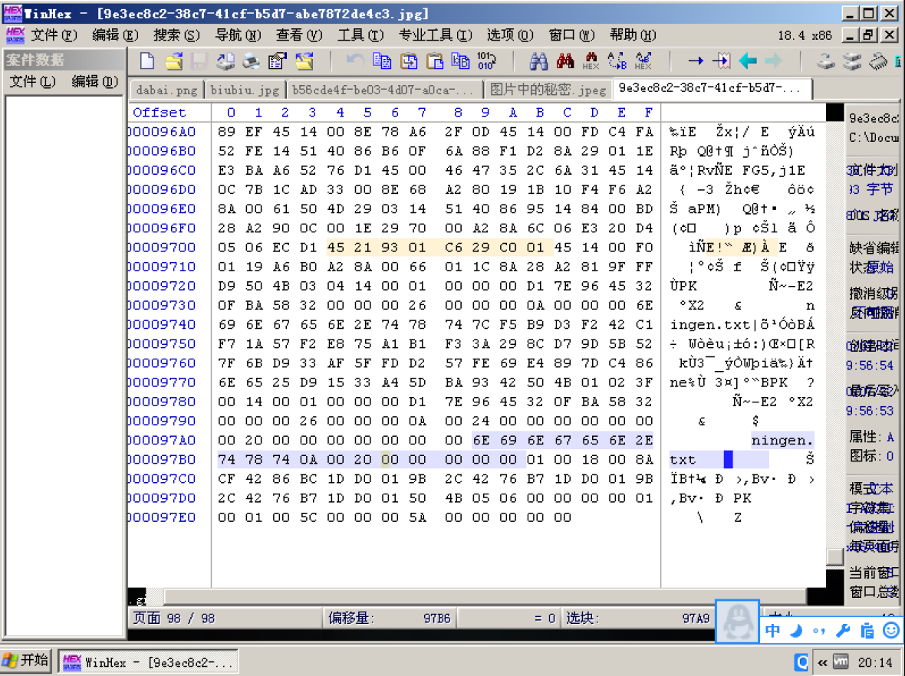
再丢进Kali里通过binwalk查看，可观察到其中隐藏着一个zip👇
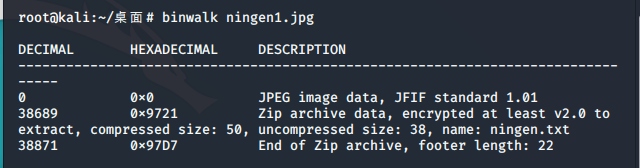
于是更改文件的后缀名为zip后，打开我们的暴力破解压缩包的软件（如Ziperello）根据提示设置密码为数字，长度为4位，瞬间爆出👇
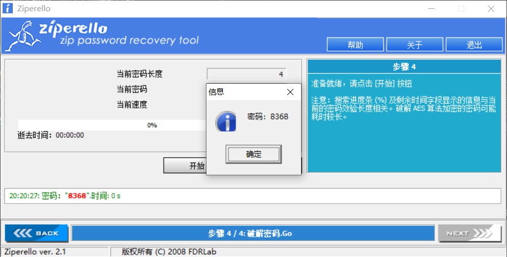
打开压缩包文件后，输入密码可看到txt文件里的内容，得到flag
4
灵活运用常见方法(可能正是因为灵活，才叫爱因斯坦吧)
爱因斯坦
注意：得到的 flag 请包上 flag{} 提交
此为原始图像👇
常见思路一：第一步，丢进binwalk查看
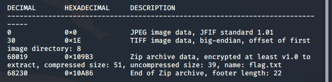
发现一个zip文件，第二步：改后缀名，尝试爆破。但由于不知密码结构，只好选择所有打印字符，爆破了好久也无法。只好推翻。
常见思路二：第一步，丢进winhex。查找关键字flag，只找到加密文件flag.txt，对于密码依旧无法。卒。
试过了浅薄的笔者会的方法后，一时进入了死胡同。后发现漏了一个简单的细节没有查看->
文件属性！！！
这也是极易被忽略的的一点。
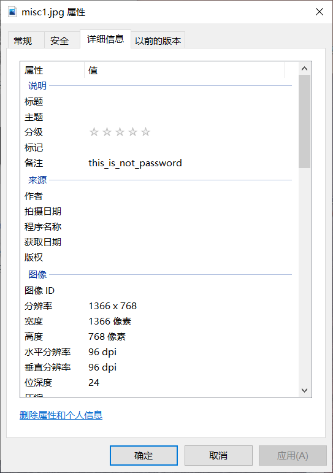
害,这一顿费劲。通过密码解开flag.txt，得到flag即可。
5
试别被隐藏的zip文件+认识elf文件
FLAG
感谢 牌森 同学提供题目~
注意：请将 hctf 替换为 flag 提交，格式 flag{}
此为原始图像👇
丢进Stegsolve,常规操作后可得
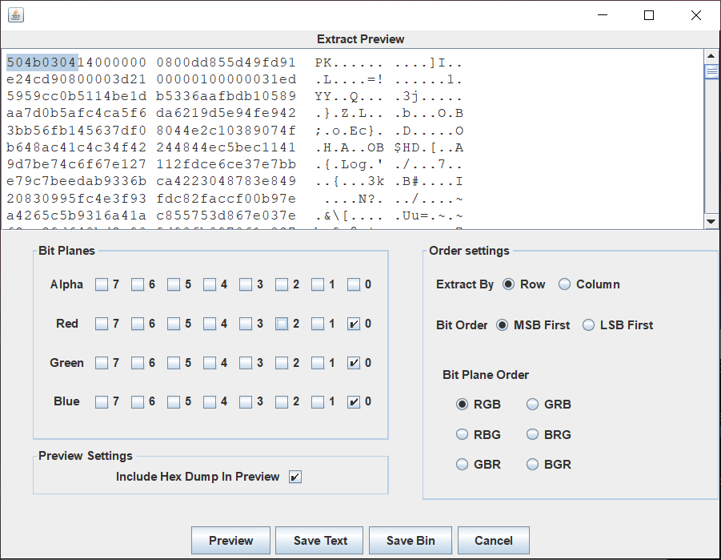
查询可知，图中被标记的部分正是zip文件的文件头（学到了
于是导出save bin为zip文件，压缩包内为一命名为“1”的文件，通过file查看可知此为一elf文件👇
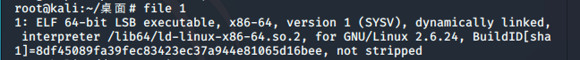
elf文件格式：在计算机科学中，是一种用于二进制文件、可执行文件、目标代码、共享库和核心转储格式文件。
通过strings 1可得flag👇
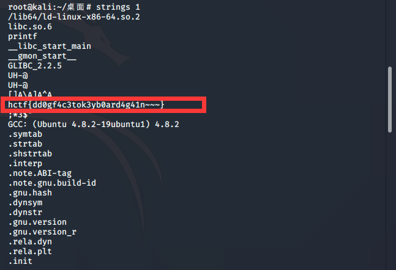
适当处理后即可。
6
基础操作+1
另外一个世界
注意：得到的 flag 请包上 flag{} 提交
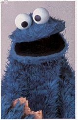
strings一下,得二进制👇
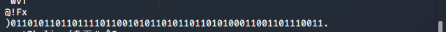
二进制转字符串，套flag，搞定！
启示:这道题的逻辑思路倒很顺。刷题还是不够多，strings作为基础操作，的确是应该想到的。get
7
修改文件头
[BJDCTF 2nd]最简单的misc-y1ng
得到的 flag 建议用 flag{} 包上提交。
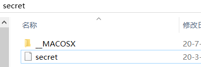
丢进winhex,对比手头其他png文件可发现本文件缺少文件头，粘贴缺失部分后另存为.png文件，可得到一张图片👇
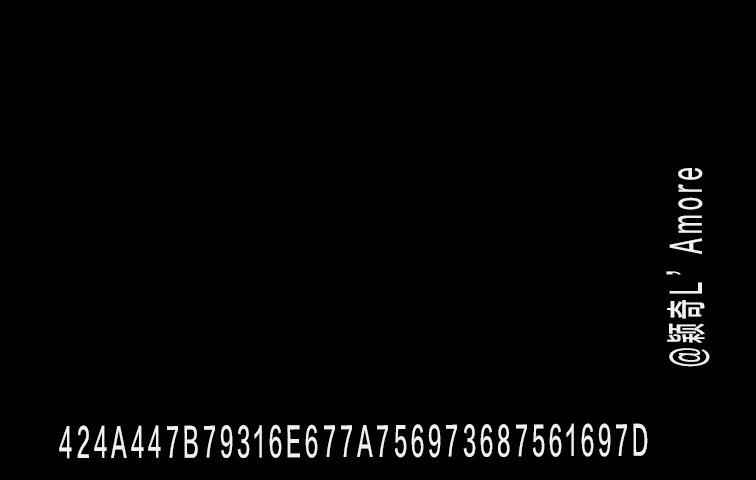
将图中十六进制转文本可得flag。
8
linux操作+Brainfuck解密
面具下的flag
注意：得到的 flag 请包上 flag{} 提交
由于此题笔者参考了wp，故在此贴出大佬的解题步骤，在此只记录一些操作
binwalk查看可知有一加密压缩包后，binwalk -e分离
压缩包伪加密可由010editor或winhex修改
7z XXX -o./可解压得文件
该题还用到了brainfuck解密
9
隐写工具F5-steganography的使用+zip伪加密的破解
刷新过的图片
浏览图片的时候刷新键有没有用呢 注意：得到的 flag 请包上 flag{} 提交
hint提及刷新键，故考虑F5-steganography。
笔者的kali不知怎么无法git clone，故下载了安装包后启动终端，亦可。
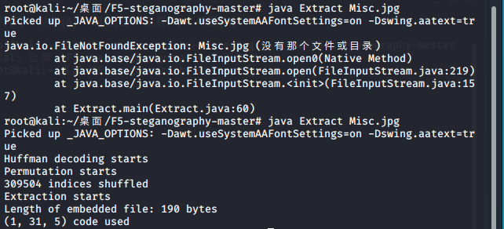
得一txt文件，根据文件头50 4B 03 04，更改后缀名为.zip，发现为加密压缩包。
更改00 14 00 0X 00为00 14 00 00 00后即可正常打开，得flag。
10
python中pillow库的使用
梅花香之苦寒来
注意：得到的 flag 请包上 flag{} 提交
这道题真的找了好久，各种方法都试过了，大佬们的方法我愣是复现不了，最终python的pillow库救了我，开整！
winhex中看到jpg的文件尾FF D9后出现了大篇幅的数字，观察得最大为f👇
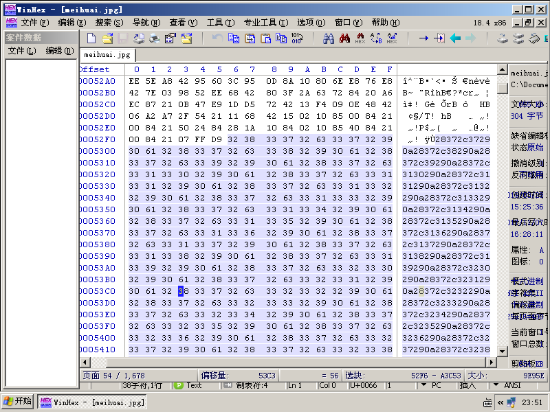
故用脚本将hex转化为ascii
f1 = open(r'C:\Users\16231\Desktop\ascii1.txt','w+') |
后通过pillow库成像即可👇
from PIL import Image, ImageDraw, ImageFont, ImageFilter |
可得一张二维码，扫描得flag。
11
[BJDCTF 2nd]圣火昭昭-y1ng
得到的 flag 建议用 flag{} 包上提交。
开局一张图，flag全靠猜。因为出题人失误搞错了，解出来的key去掉后3位的com
附件为图片，右击属性详情信息有东西。新佛曰开头，解密后得gemlovecom。
根据提示为gemlove，“猜”故尝试outguess解密：
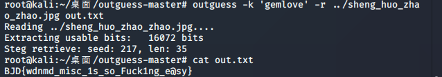
cat后得flag。
12
[GXYCTF2019]gakki
得到的 flag 请包上 flag{} 提交。
得到一张gakki的照片，
（有时候工具用多了真的很坑，害。尝试第一条路是stegdetect分析，发现为jphide，需要密码，死路）
常规思路，binwalk -e 得到压缩包-》爆破密码8864-》得到txt
#2V0VI_05X$GygD3*g@gYurMGim#1=)D_@Z(JcRevlyGq&N-dgPH8XXSGL{@9}zVmlmxv1vEwbqr)ea!YMI2lznoV_bMrXLbwFrgaiQYfsVN14weObXp)(ybmXjXuTkFuj1pG54!mij1){41gKmFL&Zgeho01PPEwE=r*csndRof$X7JBJ=CaNRGMjLY_-GiqlDHWaVk-XZ*8lD5!kLb(OH%8u2LtQXX3QV{1Lh)LyGF#kpV$}GXRKla)u(pw(&ggmYU82HLWhJgngOjhwofkqqC{Hi)g!GXrY6=UQGvaeOIrVg*jkGjgGRTY78Ol$w0&tzZ1t}z#_c^t8GrskRcz9YKE_)4B(U$r3qUcCwz4BVq92&0UBaWg#e23&oZ}G(zIl=(k=^YTlZrQkryM6oW!#-0*{X1oiX4Zwi#jhOUm*aM{NFX-s=j2M*S$B_EMkF{R=QufYYViOHmNGaDST0e)}w4q8{l(NY)BGCWKiGiM0(o$jPW@b!LeQbRM!k$8H$5z7JhE4aIHM-LsAn_PSSg_=lkHmGGok$A$Wrkd^yD9KT#zF-ByEJx-I!g3cZPAv{SkP7zult3NOZ)Kf-Xah)%x3X4kx{SdoYB#icdYmB_T3rggCts^EcZl_R^w-B-B5H=4fGRx-IkH59BoB!_&GP)X=sYkk=Y^Y^YTbodkXQ^vxT}K}#G$Ff{z_(PQFvGiyXIieE4taqmkNln)!g4EkRh@tTjQKB0cfJ!-lAG3%1ihZI$fyXb!Tb09D7G2nuA55GA6A1K{cOiA3e4GuI=V3g785Q8mTk{c&&Fk}c51Qh-T9EQf{dYbk&eFc7NI{izbFP9Ycs2PfQcs24gTCY{GG5JoGe@l)QVo$yWXhr%yFQk*}GgCfXFTa(y$99-BDji(-!E$Y${TD8i6@S(CGt8ZYqXJTwhW{}p(gT8a&L64CC610N$ved{^YDLUK#W9_{x0ZG@sj)_kR=ziHM7LlKv8SwZ*e9utoY4ZYf&O(W(Xk_j0(Yi*^QGFUt_PD}NN=y&SrY-j77PPyn$GsEmoaN6VKJ=j{G#6JHgY(A1$sKX-g9&gigX7d-w*NX&rGN&0tFtQGRkw2J)bH{GPLfFZNE=03UmA9nq%FkLH9faebDMl%} |
诸如此类的乱码-》词频分析得到
GXY{gakiIsMyw1fe} |
13
弱口令
老菜鸡，伤了神，别灰心，莫放弃，试试弱口令 注意：得到的 flag 请包上 flag{} 提交
得到一压缩包，存在注释内容：
与曾经做过的一个题很像，大意了。
拖入notepad++,得到由→和·组成的摩斯电码
…. . .-.. .-.. —– ..-. — .-. ..- –
hell0forum
得到赵丽颖图片👇
png文件考虑lsb隐写。
python2 lsb.py extract 1.png new 123456 |
弱口令123456后得到文件new
flag{jsy09-wytg5-wius8} |
14
我吃三明治
得到的 flag 请包上 flag{} 提交。
foremost得到两张相似的图片。
BeyondCompare对比无果，回来查看原文件的十六进制。
连接处得到一段base
MZWGCZ33GZTDCNZZG5SDIMBYGBRDEOLCGY2GIYJVHA4TONZYGA2DMM3FGMYH2 |
转换后得到
flag{6f1797d4080b29b64da5897780463e30} |
15
[SUCTF2018]single dog
得到的 flag 请包上 flag{} 提交。来源：https://github.com/hebtuerror404/CTF_competition_warehouse_2018
一张JPG
右键文件属性无果，查看二进制，文件末尾存在504B0102字样，全文搜索504B0304，得到完整压缩包。
得到1.txt
ﾟωﾟﾉ= /｀ｍ´）ﾉ ~┻━┻ //*´∇｀*/ ['_']; o=(ﾟｰﾟ) =_=3; c=(ﾟΘﾟ) =(ﾟｰﾟ)-(ﾟｰﾟ); (ﾟДﾟ) =(ﾟΘﾟ)= (o^_^o)/ (o^_^o);(ﾟДﾟ)={ﾟΘﾟ: '_' ,ﾟωﾟﾉ : ((ﾟωﾟﾉ==3) +'_') [ﾟΘﾟ] ,ﾟｰﾟﾉ :(ﾟωﾟﾉ+ '_')[o^_^o -(ﾟΘﾟ)] ,ﾟДﾟﾉ:((ﾟｰﾟ==3) +'_')[ﾟｰﾟ] }; (ﾟДﾟ) [ﾟΘﾟ] =( |
类似上文
AAencode编码(http://ctf.ssleye.com/aaencode.html)
得
function a() |
16
[WUSTCTF2020]alison_likes_jojo
得到的 flag 请包上 flag{} 提交。
感谢 Iven Huang 师傅供题。
比赛平台：https://ctfgame.w-ais.cn/
得到两张图片，对第一张图查看二进制，提取出一加密压缩包。ZIP爆破得密码888866
beisi.txt
WVRKc2MySkhWbmxqV0Zac1dsYzBQUT09 |
64->64->64
得
killerqueen |
至此咱们拥有了一个密钥及第二张图片
需要密钥的图片隐写，steghide无果，尝试outguess
outguess -r jljy.jpg -k killerqueen -t out.txt |
得到wctf2020{pretty_girl_alison_likes_jojo}
17
[SUCTF 2019]Game
感谢菠萝吹雪师傅出题。
flag 请替换 SUCTF{} 为 flag{} 后提交。
图片貌似没啥东西，src里存在index.html,查看源代码发现
<?php echo "here is your flag:ON2WG5DGPNUECSDBNBQV6RTBNMZV6RRRMFTX2===" ?> |
base32:
suctf{hAHaha_Fak3_F1ag} |
返回观察图片，尝试lsb隐写后可得到
U2FsdGVkX1+zHjSBeYPtWQVSwXzcVFZLu6Qm0To/KeuHg8vKAxFrVQ== |
此处划重点U2FsdGVkX1开头的为DES加密！
脑洞：密文为上述字符串，密钥为suctf{hAHaha_Fak3_F1ag}，通过http://www.metools.info/code/c27.html解密得到
suctf{U_F0und_1t} |
18
[湖南省赛2019]Findme
得到的 flag 请包上 flag{} 提交。
得到五张图片，以此查看二进制，明显的，
5.png末尾得到
I give U a gift:Yzcllfc0lN |
2.png中藏着很多.txt
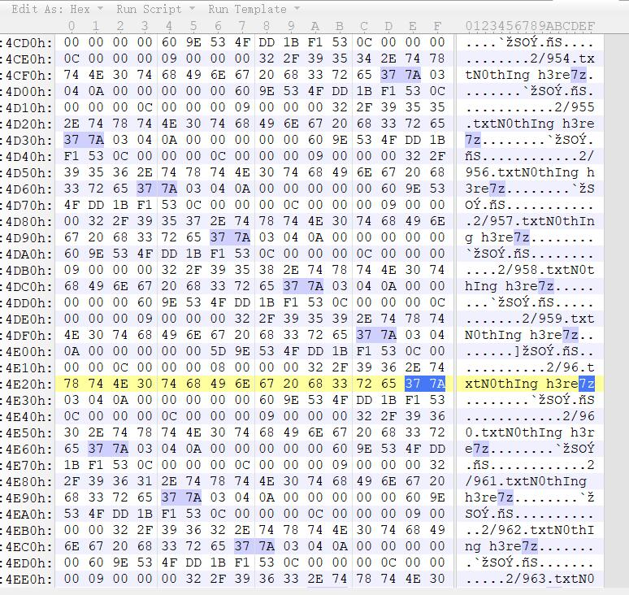
正如我们所知.7z也是压缩包的后缀名之一
直接binwalk -e 2.png，未果
统一替换377A为504B后分离，得1000个txt
随意点开几个，发现内容一致
N0thIng h3re |
根据大小或修改日期对这些文件进行排序，得到一个不一样的618.txt
You find it: 1RVcmVfc |
1.png
猜测该图本应当跟其他几张类似
先根据crc爆破长宽高
# -*- coding: utf8 -*- |
得到初步恢复的图片
二进制打开后发现chunk[2]和chunk[3]不对劲
（此处笔者本身版本不显示template，在https://www.sweetscape.com/010editor/repository/files/PNG.bt复制后创建并运行了png.bt后得到，希望对你有帮助
对比后发现是缺少了49444154IDAT头，补上即可
然后就得到了正常显示的11.Png！！
（学到了，怪不得对于有的格式我的010editor会显示得更详细
Stegsolve进行处理，在blue2发现二维码！
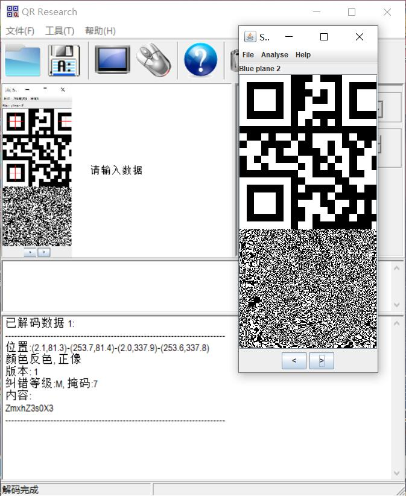
得到
ZmxhZ3s0X3 |
3.png着实有难度
在crc值上做文章
每块连起来是
33526c5a33303d |
十六进制解码后
3RlZ30= |
4.png
strings 4.png
another part:cExlX1BsY= |
依次得到
ZmxhZ3s0X3 |
没错顺序是猜的
ZmxhZ3s0X3Yzcllfc0lNcExlX1BsY1RVcmVfc3RlZ30= |
19
Business Planning Group
看图吧。
请将 bsides_delhi{} 换成 flag{} 提交。
由 15h3na0 师傅提供。
得到一张png图片，能正常打开，查看二进制
文件末尾有东西，以BPG开头
搜索引擎说这是也是个图片类型，同时找到了查看器https://bellard.org/bpg/
下载后
bpgdec bpg-0.9.8-win64\Untitled1.bpg |
得到out.png
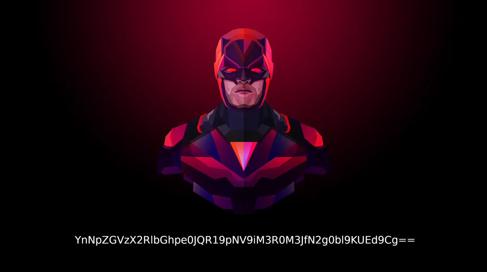
YnNpZGVzX2RlbGhpe0JQR19pNV9iM3R0M3JfN2g0bl9KUEd9Cg== |
base一把梭
bsides_delhi{BPG_i5_b3tt3r_7h4n_JPG} |
20
[UTCTF2020]File Carving
得到的 flag 请包上 flag{} 提交。
严格意义上来说不算图片类
二进制文件尾发现压缩包
分离出之后是开头为ELF的文件
kali
root@kalinew:# ./hidden_binary |